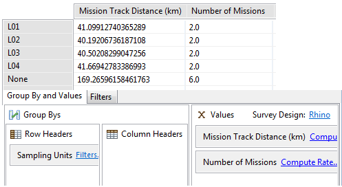

As consultas de pesquisa são usadas para exibir resumos das observações relacionadas à pesquisa. As consultas de resumo resumem os dados da pesquisa em vários grupos, calculando um valor para cada grupo. Resultados de resumos só podem ser visualizados em tabelas.
 |
Exemplo de Consulta de Resumo |
Os valores que podem ser calculados incluem contagens de categoria de modelo de dados (número total de observações de caixa), valores de atributos de modelo de dados numéricos (número total de armas), comprimento de trilha de missão, número de missões e número de pesquisas. Múltiplos valores podem ser calculados em uma única consulta.
Os valores podem ser agrupados por atributos de pesquisa (pesquisa, missão), propriedades de missão, unidade de amostragem, observador, tempo (ano, mês, etc), áreas (setores gerenciais, áreas administrativas), categorias de modelos de dados e atributos de modelo de dados de lista ou árvore . Múltiplos grupos por podem ser selecionados para uma única consulta.